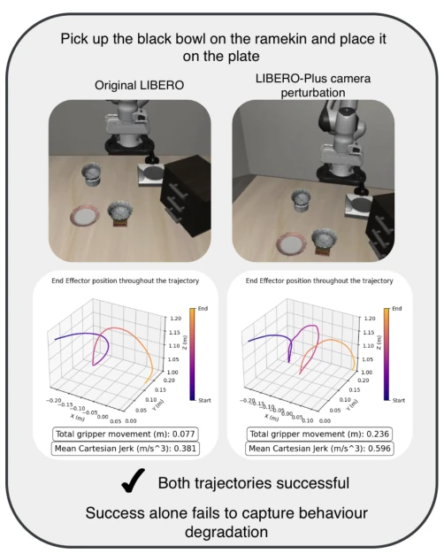

This paper pours cold water on the community that blindly worships Task Success Rate (TSR). Everyone was busy ranking, thinking 90% success rate is the gold standard, but after examining the paper, they found that although robots "completed the task", actions might shake like Parkinson's patients or repeatedly grasp like OCD patients. The authors did not engage in empty talk, directly using the LIBERO benchmark to test three SOTA models. The conclusion is stinging: high TSR does not imply stable behavior; under input perturbation, the quality of successful trajectories may be severely degraded. This is like passing an exam, but the handwriting is messy and steps are skipped, questioning actual ability. Although simulation environments have limitations, this behavior evaluation framework indeed fills a missing piece of the puzzle for "model cards", reminding us not to just look at results, the process must also adhere to principles. However, daring to claim physical deployment effects based solely on simulation data carries some suspicion of "theoretical speculation", fortunately code is open-sourced, convenient for verification. Additionally, metrics like Jerk and path length are general but lack semantic specificity, e.g., cannot directly distinguish between "misgrasp" or "jitter", this point still needs subsequent work to refine.
Motivation is clear: current VLA evaluation is too "lazy". Most benchmarks (e.g., LIBERO [19], LIBERO-Plus [7]) only report binary task success rate (TSR). Rabanser et al. [11] pointed out long ago that agents post-deployment inevitably face environmental perturbations, but existing work often only focuses on whether TSR dropped. This masks a key problem: robots might "barely" complete the task, but the process is extremely inefficient or dangerous. For example, joint jitter mentioned in [12] may cause mechanical wear, [16] points out users care about efficiency. Existing research either only looks at behavior not perturbation [27], or only looks at perturbation not behavior quality [7], no one combines these two. Authors want to fill this gap, prove "done" does not equal "done well", especially under perturbation, TSR may mask behavior degradation. For embodied intelligence, decisions convert to physical actions, consequences are tangible, cannot rely solely on binary metrics to measure robustness.

Fig. 1: An illustrative example of two successful trajectories, collected using the π0.5 model on the “pick up the black bowl on the ramekin and place it on the plate” task from the LIBERO-Spatial suite. Under the LIBERO-Plus camera angle perturbation, the goal condition is met, yet the bowl is dropped and re-picked during the trajectory. TSR alone does not capture this behavioural impact; instead, it is reflected in the mean Cartesian jerk and cumulative gripper movement trajectory metrics.
方法Method
方法核心是“行为鲁棒性评估框架”。首先，基于 LIBERO 和 LIBERO-Plus 基准扩展数据收集，获取末端执行器位置、关节位置和夹爪动作。然后，定义了一组轨迹级指标：包括持续时间、总夹爪移动量、笛卡尔加加速度（Cartesian jerk）、关节加加速度、路径长度等。这些指标借鉴了 RoboEval [12] 但做了适配。接着，对每个任务在原始条件（Baseline）和 7 种扰动条件下分别计算成功轨迹的指标分布。通过计算均值变化百分比（Δ）和中位数绝对偏差（MAD）来量化典型行为变化和一致性变化。统计上使用 Mann-Whitney U 检验显著性，Spearman 相关分析 TSR 与行为变化的关系。这套流程不依赖特定基准，只要有条理数据就能用。扰动包括物体布局、相机视角、机器人初始状态、语言指令、光照、背景纹理和传感器噪声。
Method core is "Behavioral Robustness Evaluation Framework". First, based on LIBERO and LIBERO-Plus benchmarks extended data collection, obtain end-effector position, joint position and gripper action. Then, defined a set of trajectory-level metrics: including duration, total gripper movement, Cartesian jerk, joint jerk, path length, etc. These metrics borrowed from RoboEval [12] but made adaptations. Next, for each task under original conditions (Baseline) and 7 perturbation conditions respectively calculate successful trajectory metric distribution. By calculating mean percentage change (Δ) and Median Absolute Deviation (MAD) to quantify typical behavior change and consistency change. Statistically use Mann-Whitney U test significance, Spearman correlation analysis TSR and behavior change relationship. This process does not rely on specific benchmarks; it can be used as long as structured data is available. Perturbations include object layout, camera view, robot initial state, language instructions, lighting, background texture and sensor noise.
实验Experiments
实验在 LIBERO 的四个套件（Spatial, Long, Goal, Object）上进行，测试了 π0.5、VLANeXt 和 OpenVLA-OFT 三个模型。扰动包括相机角度、机器人初始状态、传感器噪声等。结果显示，即使 TSR 保持较高（如 π0.5 在相机扰动下 TSR 69.7%），成功轨迹的笛卡尔加加速度可能增加 24% 以上，夹爪移动增加 37%。TSR 下降与行为变化呈中等相关（ρ≈0.5），但并非完全一致。例如 π0.5 和 VLANeXt 在相机扰动下 TSR 相近，但行为退化程度差异巨大。此外，某些扰动（如光照）反而减少了行为变异性（MAD 下降），说明成功轨迹的分布被“筛选”了。这表明在扰动下，只有特定类型的成功行为能存活，而低质量的成功轨迹可能被过滤掉了。
Experiments conducted on LIBERO's four suites (Spatial, Long, Goal, Object), tested π0.5, VLANeXt and OpenVLA-OFT three models. Perturbations include camera angle, robot initial state, sensor noise, etc. Results show, even TSR remains high (e.g., π0.5 under camera perturbation TSR 69.7%), successful trajectory Cartesian jerk may increase 24% or more, gripper movement increase 37%. TSR drop and behavior change show moderate correlation (ρ≈0.5), but not fully consistent. For example π0.5 and VLANeXt under camera perturbation TSR similar, but behavior degradation degree difference huge. Additionally, some perturbations (e.g., lighting) instead reduced behavior variability (MAD drop), indicating successful trajectory distribution was "filtered". This indicates under perturbation, only specific types of successful behaviors can survive, while low quality successful trajectories may be filtered out.